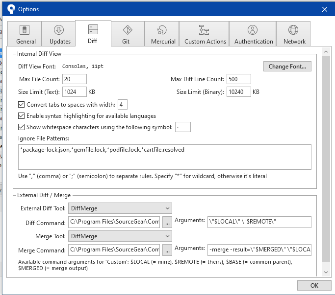

Rangkuman Materi Git GUI
Pengertian GUI Tools
Sourcetree
merupakan software berbasis GUI untuk mempermudah dalam mengoperasikan GIT

Manfaat Diff Merge di Sourcetree
Solving conflict jadi lebih mudah
Mempercepat kinerja